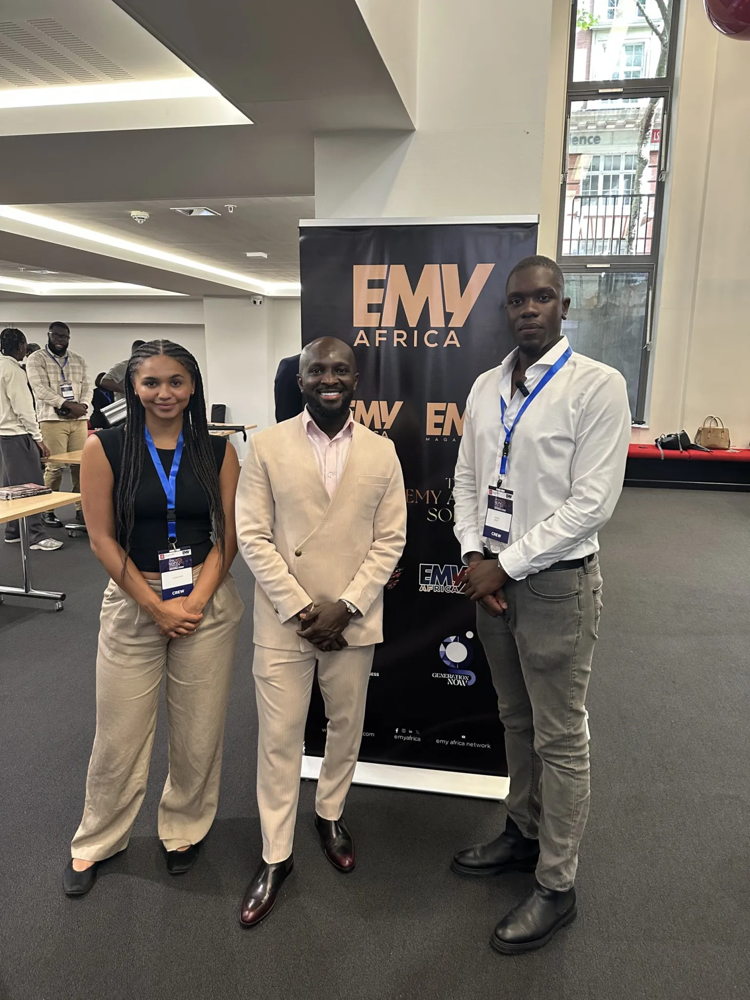

British Ugandan Filmmaker-Broadcaster To Launch Youth Focused Diaspora Media Platform
August 1, 2025 — Kampala
Critically acclaimed Filmmaker, Broadcaster, and Model Norman Busigu (recognised by the likes of GQ South Africa and Yahoo! Finance) is set to create a new and disruptive youth-led media platform – Postcards From The Diaspora (PFTD) – with its core aim of “bringing us closer to Home”.
It will do so by modernising the distribution of news/current affairs in real time across Africa and the Caribbean to audiences in the diaspora, showcasing (and preserving) stories and events from across these communities, and serving as a vehicle for social change.
PFTD’s hard launch will come in late 2025.
Impressively, PFTD has already been recognised as an official media platform, granting Busigu and the team Press accreditation to global events this year, including Afro Nation Portugal, EMY Africa Rising Symposium (at the London School of Economics), and Africa Fashion Week London.
It is a goal for PFTD to be present at events of all forms at the community and global levels as Press, to ensure that their happenings are properly reported and the learnings are distilled back to our communities authentically through the PFTD platform.
The idea was formed many years ago… I really felt there was a big gap in the media landscape of a youth-led platform that provides those in the diaspora (with a focus on young audiences) with news updates of key happenings across Africa and the Caribbean in a factual, punchy, and fun way. Right now, I feel that media outlets don’t effectively distribute their news through utilising social media, nor do they account for our declining attention spans. We need something fresh and new that connects those of us in the diaspora more directly to home (Africa and the Caribbean). Also, our parents’ generation is now seriously ageing, and it is our time to carry the baton and proactively ensure that we maintain the bridge between the various worlds. Importantly, Busigu stressed that an undertaking of this scale cannot be achieved alone. “This by no means is a one-man job, and it would be completely wrong of me to stand centre stage and take full credit. I work with a dedicated team who are just as invested in the evolution of PFTD as I am, if not even more. Without them, this will quickly fall apart.”
The Founding Members of PFTD are:
- Yasmin Minnis: Emerging Journalist, PFTD Senior Editor (Africa and Caribbean Correspondent)
- Emmanuel Omotayo: Emerging Journalist, PFTD Social Media and Content Lead
- Yinka Oloòtọ́: Qualified Solicitor (UK), Emerging Journalist (Opinion Writer & Nigeria Correspondent)
- Susannah Oluwaseun: Emerging Journalist (General Correspondent)
- Malik Mikel: Socio-legal scholar, Emerging Journalist (Opinion Writer & Caribbean Correspondent)
- DJ Reckyy: In-House Content Creator
At the heart of the PFTD philosophy is to also create a platform where artistic/journalistic integrity is upheld to the highest degree; purity of the output will be a foundational pillar of the platform.

To this end, PFTD will be a platform that improves access to (and opportunity within) the creative industry – particularly for young African/Caribbean emerging talent, by democratising the landscape through creating more entry points and increasing transparency.
Busigu hopes that in time, PFTD will be a platform that “organically connects the diaspora community with those back home in Africa and the Caribbean, so that we can collectively work towards achieving our common goals.”
He hopes that PFTD delegates from the diaspora and those in Africa/Caribbean can have conversations with agents such as diplomats, governors, presidents, etc, of countries back “Home”, to meaningfully discuss what transgenerational change looks like, how we can be involved in the development of our countries, and how we can help plug knowledge and skills gaps caused by the brain drain, etc.
As things get closer to the official hard launch of PFTD, Busigu will explain in more detail what the various tenants of PFTD are and how it will achieve the ambitious goals the team has set out.
Busigu is opening the PFTD doors to anyone who wants to lend their enthusiasm and skills to the platform. All they need to do is reach out to him. His Instagram is @normanbusigu and email is norman.busigu@outlook.com
← Back to News